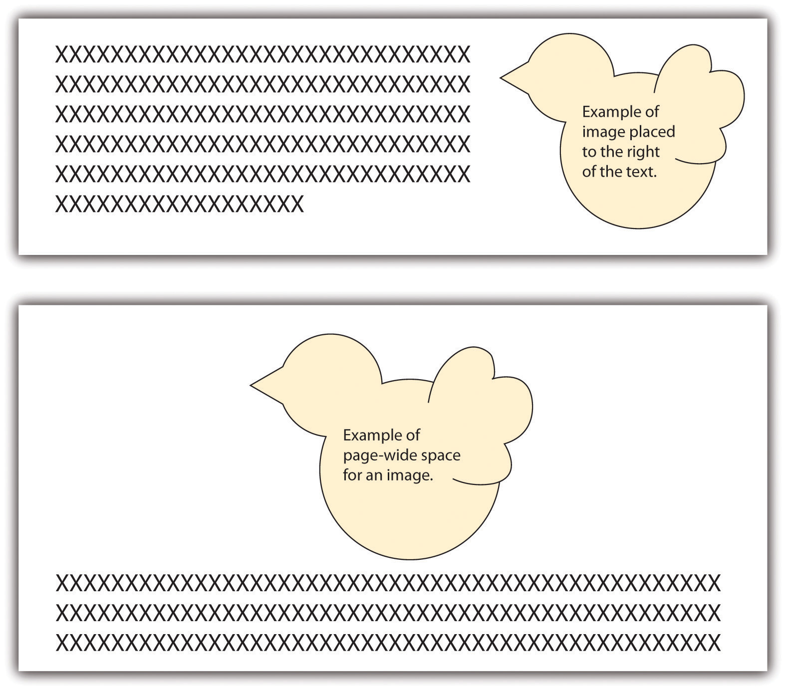

Using design options, you can vary the look of your written work. You can make design choices based on your personal preferences, requirements, purpose, and audience. You have many options regarding both text formatting and use of visuals.
Think about a résumé, an event flyer, a page in a research paper, a business letter, and a page in a novel. All these items start out exactly the same—as a blank page. The second step is typically also the same—text is added. The third step, however, differs, as the text formatting is varied to create the desired look. Based on requirements or audience expectations, you will sometimes want to conform to conventions. Other times, you can employ more personal choices. For example, an essay conforming to the American Psychological Association (APA) or Modern Language Association (MLA) style sheet (discussed in Chapter 10 "Publishing") has very rigid requirements regarding font choice, margin size, subhead formatting, and placement of page numbers. Likewise, as discussed in Chapter 12 "Professional Writing", Section 12.1 "Writing Business Letters", a business letter has some audience-expected features, such as date, name and address of person receiving the letter, greeting, introduction, body, closing, salutation, signature, and contact information for the sender of the letter. A business letter, however, does have a bit more flexibility than a paper written in APA style does since you can vary some aspects, such as your font choices and margins. On the other hand, a business letter written in an unusual or silly font will not likely be well received, so you’ll want to make choices with audience expectations in mind.
As you begin to design a document, you will need to consider the basic layout, margins, line spacing, and alignment on the page. If none of these options matter to you, you can simply accept the default choices of the software you are using. For most documents, however, you will likely want to make some changes from the default settingsSoftware choices made in the factory and that remain in place until a user chooses to make changes.. You might even want to change your default settings to match the desired format of your most frequently used document type.
You will need to decide the best basic layout for your document. For example, if you are writing a novel, you will likely want to use straight text in paragraphs. But if you are creating a comparison of three novelists’ treatments of the same topic, you might want to use columns or a chart. If you are creating a flyer, you might prefer strategically placed text boxes (for more on flyers, see Chapter 14 "Public and Personal Writing", Section 14.2 "Creating Flyers and Brochures"). You will make your layout and formatting choices based on set requirements or your personal choices regarding the visual effects you want to convey to your readers.
White spaceThe area on a paper or screen that is not covered with text or images. is the area on a page (hard-copy or digital) that is not covered with text or images. Keep in mind that well-used white space makes a page more visually appealing and easier to read. White space, of course, is not always white; on a blue sheet of paper, or against a blue backdrop on a web page, white space is blue. Regardless of color, a balance of white space and text makes a page easier and more inviting to read.
When you are free to make your white-space choices, use white space to set headings and subheadings off from the main text. Use either 1½ or double spacing for the text body to provide a little white space between the lines of text, and use one-inch margins all around. Using columns is another way to create white space. Columns allow you to place considerable amounts of text on a page without creating an overwhelming appearance.
You can also set margins and line spacing to manage the amount of white space in a document. In some situations, such as a specific academic research or professional setting, you are likely to encounter specific guidelines regarding margin widths and line spacing. In many situations, however, you will be able to choose your margins and spacing. Apply logic as you make these choices so that your document can function to your best advantage. For example, if you or someone else will need space to add notes or edits, use double or triple spacing and wide margins. On the other hand, if you need the text to fit within a tight spot, tighten both the margins and line spacing. Keep in mind that the tighter the text is, the less inviting it is to read. Indenting is another option when making basic layout plans. Again, some situations require it and others leave it up to your discretion.
Alignment choices can also affect the overall look of a page of text. With most word processing software, you can choose to align text to the left, to the rightText where all lines end on the same imaginary vertical line on the right side of the paper., or to the centerText where all lines are centered from left to right.. You can also justifyText where all lines begin on the same imaginary vertical line on the left side of the paper and end on the same imaginary vertical line on the right side of the paper. text, which is sort of a combination of the other three options:
Figure 9.1

Most business and academic documents use left alignmentText where all lines begin on the same imaginary vertical line on the left side of the paper. as the standard format. The other three options are used less often but can provide effective alternatives in specific situations. For example, you will usually center-align text on a title page; you will typically right-align the page numbers in a table of contents, and you might justify text when you want to fit the maximum amount of text within the given space (such as within a newspaper article). Both center-aligned text and right-aligned text should be used sparingly since they are difficult to read in large amounts.
Detailed information that would interrupt the flow of your document is better placed in an appendix than in the flow of your text. Using appendices makes it easier for readers to read your text, and they set apart details that some readers might not want to read or might want to read independently from the main body of text. If you have one item to place in an appendix, title it “Appendix,” and refer to it as such in the text. If you have more than one document to place in appendices, label them “Appendix A,” “Appendix B,” and so on. As with images, always refer to the appendices at the relevant point in the text, but do not repeat the bulk of the content within the text. The following are examples of information typically relegated to an appendix:
Along with basic layout choices, you can control the look and feel of a document using certain text features. As with the other formatting options, you should base your choices based on your personal preferences, requirements, and audience expectations.
You can use headings and subheadings to break up text to make it easier to read. Keep two points in mind when you are deciding whether to use headings and subheadings: consistency and organization. Your headings should follow a consistent pattern in regards to both parallelism and content hierarchy, and the headings should help the readers see the relationships between parts of the text.
Figure 9.2

Headings and subheadings also provide a means of organizing text into categories that help readers comprehend the relationship between parts of the text both during a thorough read and when quickly glancing over the text. Clearly, headings and subheadings are not appropriate in some situations, such as within business letters and in documents that are only a couple of paragraphs long.
Take efforts to create short, informative headings and subheadings. Within a document, maintain consistency for headings and subheadings. For example, you might choose to make all the main headings gerund phrases (e.g., Using Text Features) and all the subheadings questions (e.g., Will Visual Text Features Help?). Also, use the same font features for each level of heading to create consistency. In some situations, your heading format is preset. Other times, you have choices. In both situations, you should maintain parallel format across each level.
Today’s word processors typically offer a wide variety of font choices. You should choose a font that meets your needs. For example, a research paper might require the use of the Times New Roman font for ease of reading, an invitation might look best in a swirly script for fanciness, and a poster often demands a dark, heavy font for distance viewing. Two common fonts that are widely used in professional and academia settings are Times New Roman and Arial.
Figure 9.3

Typically, you should use 12-point font for standard text. Headings might be a size or two larger. In the absence of required sizes, you should use standard sizes to make your text easy to read.
Along with font choices and sizes, you can also enhance your text using visual text features, such as those that follow. You can use the features in many ways, such as to call attention to text, to set text apart, and to make text easier to read at a glance.
As a rule, you should use these features sparingly so you do not diminish their effects. Exceptions to this general rule are some of the features that have specific, set uses. For example, standard format requires that you write acronyms in all caps and titles of books in italics.
Although you do want to take steps to break up the text on a page, you do not want your pages to look cluttered. To create a clean look, keep your features to a minimum.
It may be a cliché to say “a picture is worth a thousand words,” but the truth is that visual images have power. Types of visuals include the following:
Incorporating lists, tables, and images is another way to break up daunting blocks of text with a combination of text-breaking images and white space. You can add white space by presenting your lists vertically rather than running them horizontally across the page as part of a sentence. Also, you can leave enough white space around images to frame the images and separate them from the text.
Besides white space, there are other considerations to keep in mind when choosing visuals. When possible, use a variety of types of visuals, but remember that any visuals you use should enhance the content of the text. For example, only add photos if viewing the photos will clarify the text. Near each visual, explain its purpose. Do not expect your readers to figure out the values of the visuals on their own. However, when you explain the purpose, do not explain it so thoroughly that readers have no reason to look at the visuals. For example, you should either list out the types of visuals or use a diagram such as the one shown and say “Use a variety of visuals, such as those shown in the box at right.” Do not both list out the options in your text and show them visually in a textbox.
You have three basic choices for finding visuals to use in your work. You can search the Internet, use photos you have taken, or create images by hand or on the computer.
The Internet is a powerful tool that you can use in several ways to find visuals to complement your work. If you simply click on “images” for your topic in a search engine, you will generate both royalty-free and protected images. However, if you include a term such as “stock imagesImage for sale from an image-source company.,” “stock photosPhoto for sale from a photo-source company.,” or “royalty-free imagesImage that is available for free use.” along with your topic, you will be able to narrow your search to royalty-free items. For example, if you are writing on the topic of the effect of television on children, you might search for “television children stock images.” Such a search will generate many options that could support a claim about the mesmerizing effect of television on children or the lack of physical activity involved in watching television.
Many services provide photos for use in publications. In these situations, you have to pay for the use of the photos and cite your source. Any pictures you take yourself are clearly royalty-free for your use. Taking a clear, meaningful picture that would be appropriate for use in your work is possible. For example, if you have children of your own or have friends or relatives who have small children, you could easily find an opportunity to take a photo such as Figure 9.4. To avoid rights issues, ask any human subjects included to sign a waiver giving you permission to use their likenesses. In the case of minors, you would obviously need to ask their guardians to sign the permission form.
Here’s an example of a typical waiver:
I give Joe Student permission to use my likeness [or the likeness of _______ for whom I have guardian or parental responsibility] in his paper entitled “Paper Title.” I understand that this paper could possibly appear in print or digital form as part of educational knowledge or research.
Signature___________________________ Date___________________________
Similarly, pictures taken by friends or relatives could be available for your use as long as you get signed permission to use the photo as well as signed permission from any human subjects in the photo. Although it might seem silly to ask your sister, for example, to give you signed permission to use her photo or image, you never know what complications you could encounter later on. So always protect yourself with permissions.
A third option is to create your visuals. You do not have to be an artist to successfully choose this option. You can use computer programs to generate very professional looking charts, graphs, tables, flow charts, and schematic images. The following examples show just a fraction of your options when using standard word processing software programs.
Figure 9.5

When you create graphics, make sure to group the components. If you find that your graphics are not holding together when viewed on other computers or in other programs, save each graphic in a separate JPEG file and use the JPEGs in your paper.
Since you will most likely submit your work in a digital format, you will probably not have to be concerned with the quality of photos you choose to use. On the other hand, if you do have to submit a paper in hard copy and are incorporating photos, make sure to use a printer with photo-quality capabilities.
Subject your visuals to the same level of scrutiny as your writing. Keep in mind that if you find one person who has a problem with one of your visuals, there will be others who also take exception. On the other hand, remember that you can never please everyone, so you will have to use your judgment.
Consider all your options as you choose whether to find existing visuals, take photos, or create visuals or a combination of the three possibilities. There is no right choice as long as the images you choose add value to your work.
Charts and graphs have long been part of research papers. With the growth of computer capabilities that can capture the world visually, research papers today typically include more charts, graphs, and images than those produced in previous years.
When you insert an image into your text, you must make some physical decisions. One of the most common choices is to place the image to the right or left of your text.
Figure 9.6
Another choice is to move the text down to create page-wide space for the image. In such situations, the image is typically placed above the related text. This format is usually used at the beginning of a document where the image treatment doesn’t break up the text.
You should choose visuals to advance your argument rather than just to decorate your pages. Just as you would not include words that are fluff, you should not include meaningless images.
Also, just as you aim to avoid the use of fallacies in your text, you also need to be careful not to use fallacious visuals. (See Chapter 4 "Joining the Conversation", Section 4.3 "Rhetoric and Argumentation" for more on fallacies.) For example, if you were arguing for or against the proposition that big dogs make good pets for families, you might show a picture of a Rottweiler. Figure 9.7 shows how the “for” side could choose a docile example (Rottweiler A), while the “against” side could choose a ferocious example (Rottweiler B) in order to support their respective claims.
Thanks to common programs such as Photoshop, you can easily alter a photo, but make sure to do so ethically. For example, say that you are making an argument that the Moser Company unfairly hires only young people and disposes of employees as they age. You decide to show a photo of some of the employees to make your point. You crop the original photo in Figure 9.7 (Moser Company A) into the version shown as Moser Company B. This cropping choice would be an example of a faked, misleading photo and would be unethical.
More than likely, you have seen tables or graphs that paint a reality that is not exactly accurate. For example, the two graphs in Figure 9.7 could be used as proof that “twice as many” high school teachers as grade school teachers choose to use computer-driven whiteboards. Graph A seems to support this statement nicely. If you look at Graph B, however, you realize that the entire sample includes only three teachers, so “twice as many” means, literally, two out of three—an inadequate sample that leads to neither impressive nor convincing data. Be very careful not to misrepresent data using tables and graphs, whether knowingly or accidentally.
Visuals, like oral or written text, can make ethical, logical, and emotional appeals. (See Chapter 4 "Joining the Conversation", Section 4.2 "Recognizing the Rhetorical Situation" for more on rhetorical appeals.) Two examples of ethical appeals are a respected logo and a photo of the author in professional dress. Graphs, charts, and tables are examples of logical appeals. For the most part, nearly all visuals, because they quickly catch a reader’s eye, operate on an emotional level—even those that are designed to make ethical and logical appeals.
Consider the following options as you choose visuals for your work:
Write a journal or blog entry or a short essay that addresses some or all the following questions: